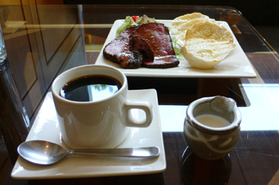

カンヌからのバトンを受けました、倉島です。
もちろんカンヌになど行ったためしなどありません。
いえ、別にひがんでいる訳でも
連れて行ってくれと、せがんでいる訳でもありません。
…何かお土産ください。
〝カンヌ〟って書いたペナントとかでもいいです。
ホテルのタオルでもかまいません。
すいません… 完全に取り乱しました。
もっとクリエイティブなトークの場でしたね。
今回はキャラミーティングのお話です。
キャラクター＆ヘンナノのデザインミーティングは、
マーベラスのある恵比寿ガーデンプレイスビルの１F喫茶店にて
行われることが多いです。
しかも私の都合で、
朝１０時スタートなどの無茶なスケジュールになりがちで、
かなりモウロウとした頭で取り組んでおるわけです。
そんなバッドコンディションの中でも、
木村氏はキテレツで普通考えつかない方面のネタをポンポン出し、
皆葉氏はタバコをふかしつつサラリと美麗なラフ画を描いてみせる。
眠いは眠いのだけれど、なかなかに楽しいキャッチボール。
いつの間にか、カップのコーヒーはからっぽだけれど、
お冷でねばる。 お冷を飲みつつネタをしぼり出す。
ランチのお客さんがチラホラ現れる頃、
皆それぞれに次の現場に向かいます。
深夜、あれこれ湧き出たネタ達をまとめラフ画を作成します。
ぶっちゃけて眠いのですが、これもまた楽しい作業。
キャラを形作る作業は面白い、
こいつらがゲーム画面で動いている姿を見る瞬間も
また、たまらなく楽しい時間なのです。
そんな訳で、寝不足だってヘッチャラなんです（大うそ）
ひとつだけ不満があるとすれば、
打ち合わせの時間に行っても、必ず１０分以上は待たされる事でしょうか…
そんな時には、このローストビーフサンドを食べながら
波打つココロを沈静化させるのであります。
おいしいんです コレが。

こんにちは、お久しぶりの和田です。
なんだかキムＰがステキな文章書いてるなぁ。
クリエイターズブログっぽくてイイ！
なんて思いつつも、流れをぶったぎって
なんでもない話を書いてしまう僕なのでした。
ごめんなさい。
先ごろ、カンヌに行ってまいりました。
毎年この季節にMIPCOMという映像の見本市があって
わが社もアニメの番組を出展してきたのですが、
今回初めてゲームも出してみよう、ということになり
憧れのカンヌに初めて訪れるチャンスを得た訳です。
ところがどっこい、実際に行ってみると
これが今まで抱いていた華やかなイメージとは違って
言ってしまえば熱海みたいな所でした。
なんというか、枯れてるんですよね。
でもそれは終わっているってことではなくて。
人や建物、そこある全てのものが長い年月を経たからこそ
出てくる味わいを持っていて今なお力強い、
みたいないい感じの寂れ方で、
それはとてもヨーロッパらしいものでした。
そんなわけで、出張の前半はフランスでいい欧州。
後半はイギリスのグループ会社RSGを訪れました。
独立系のデベロッパーのスタジオに招待されて
いろんな技術を見せてもらったり、
仕事の面ではいろんな成果があって充実してたんだけど、
その他で散々な目に会う事に。
夜ロンドンのパブで財布を盗まれました！
置き引きって奴です。
テーブルの上においてしまった自分が悪いんだけど
ほんの数分意識をそらしただけでなくなるなんて。。。
慣れちゃって油断してた。
残念なことだけど、盗られるほうが悪い
が欧州の常識なわけで
ここは日本じゃないんだと痛感しました。
加えて大馬鹿な僕はカードとか免許証とか保険証とか
ぜーんぶ入れちゃってたのでホント大変です。
皆さんもどうかお気をつけください。
他にも色々失敗談があるんだけど、
ここで書くなって感じなのでこの辺で本題、、、っておいっ！
最後に少しだけ関連の話を。
スクエニさんから『小さな王様～』が発表されましたね。
最初にニュースを見たときはカンヌにいたので、詳しい情報もわからず
「何このもろかぶり！」と、ほんとに驚きました。
あとからよくよく見てみると、中身は全然違うものなんですが
Ｗｉｉで国造りで王様、ってことなので表面的には相当似てますよね。
最初は正直「うーん、、、」って感じでした。
でもでも、Ｗｉｉｗａｒｅとか、このゲームのコンセプトは
個人的に大好きだし、賛同したい。
『小さな王様～』には是非大成功してもらって、
和製ＲＰＧといえば『ドラクエ』『ＦＦ』のように
王様ものって言えば『小さな王様～』と『王様物語』だよね
みたいにどちらも盛り上がっていくと嬉しいですね。
とにかく、開発のみんなはそんなこと全くもって気にせずに
自分たちの目指していたものを作り続ければいいと思います。
いやぁ、ほんとに色んなことがあるなぁ
ということで、どうでもいいのにながーい話はおしまい。
がんばっていきまっしょい！
みなさん、おつかれさまです。木村です。
いやー、今日もひと働きしたなぁ。
本日はゲームのイベントシーンのコンテミーティングなどやっておりました。
ちょっと１シーンだけ、文字コンができるタイミングがずれちゃって。
そこだけ進行してきたというわけです。
いやー、それにしてもプロの作業っていいなぁー。
目の前で、どんどんできちゃうんだよなー。実はコンテの秘密兵器みたいな人がおりまして、あらためて凄さをおもいしりましたので、ちょっと一言いいたかった。
本職ってすごいわ。
この凄さは１００年後まで言い伝えとして残るに違いない（笑）。
＊＊
さて、前置きはそれくらいにして、ちょこっと僕が３０代で感じた”小さなこと”を書いてみます。
実は今回の作品の話しをするときに、よく僕は 「童話」 というキーワードをつかいます。
「童話」というと子供用の本のようなきがしますが、実はそうでもない。
童話には、大人が大人にむけたメッセージが隠されています。こっそりと。
そして、そんな大人も読める童話のプロが、“サンテクジュペリ” 。
星の王子様の作者ですね。有名な人です。
プロってほんとに偉いなーとおもった人の一人です。
いつそう思ったかというと、３０歳くらい。ちょうど今から７、８年前。
女の子の友達に 星の王子様をプレゼントされたんですが、あまり喜べませんでした。
「あー、たしか小学生のときにアニメでみたな・・。
そんで中学校の先生に紹介されて・・たしか本もよんだ・・・。
たしかたしか、大学でもよんだな・・あれかぁ～。うーん。ま、たしかに面白かったが・・」
もらってうれしそうな顔はしましたが、ちょっと微妙な気持ちでした。
「だってもう、３回も読んじゃったんだもんな～」みたいな。
・・・ところが、よんでみると、おもしろいおもしろい。
子供のころは、奇想天外なだけの印象でいっぱいだった。
ところが、中学、大学、そして・・・・大人になってから読むと、いろいろな要素がすごくいい。冗談とアイロニー満載。しかも、「生きててつらかったんじゃないのか、この作者は！？」とか心配さえしてしまう。
そんじょそこらの映画なんかよりスーパーおもしろい。
子供のころよんだ印象と
中学校でよんだ時の印象
大学生でよんだ時・・
そして、３０代でよんだ時の印象がまったく違って、毎回、光ってる。
こんな物語を書けるって・・・さすがです。
こういう感じをうける絵本や童話はもちろん星の王子様だけじゃないんですが、
この手の作家さんのことを思うと、胸が熱くなる。
僕たちが作ってるゲームは
いったいいつまで語り継がれるのかな？
そんな価値のあるものになるのかな？
・・とかよぎってしまいます。
時間を越えて、いろいろな世代、時代の人が「いいねぇー」っていえるものって、本当にすごい。
いつかそんな領域に、僕も踏み込んでみたいな。（ ・・とかって思うのは、傲慢でしょうか？）
１００年前の本が、いつのまにか時を飛び越えて人に影響をあたえたり。
縄文時代の土器をみて、なんとなくきれいだなーと感じたり。
小３時代に友達と恐竜図鑑をみて、図書室でおおもりあがりしたり。
この世には、たしかに、そういう時空間を越えて面白さが伝わってしまう”素粒子”があるらしい。そしてその素粒子の一粒一粒が次の世代にうけつがれて、“おもしろエネルギー”に変換されるらしい。
僕もそんな素粒子の一粒になれればなぁと思う今日この頃です。
合掌。
＊
なんか、ブログ書いてる間に机の電球が明滅しはじめた。
あしたは１００円ショップで電球買わないとねぇ。
こんにちは、ディレクターの川口です。
みなさま、東京ゲームショウで公開された映像をご覧頂けましたでしょうか？
開発スタッフ一同、入魂の映像です。
とにもかくにもスタッフのみんな、お疲れ様でした！
ちょっと苦しい時期もあったけど、楽しい映像になりました～
この場を借りて、お礼申し上げます。
残業、徹夜、休日出勤、がんばってくれました。
みんな、本当に有難う。
まだまだマスターアップまで頑張らなきゃですが、もう一踏ん張りしましょう！
と、クリエイターである我々は時に、傍から見ると無茶な業務を乗り越えなくてはいけません。
でも「楽しんで作ってる」と、それは辛さとイコールにならないと思います。
義務で作る訳ではないので、クリエイターたちには「楽しいゲームに仕上げる
責任」がありますが、その責任を果たして、楽しんでくれたユーザーの声が
聞けたときには必ず感動します。
正直、順風満帆に開発が進むことはなかなかありません。
王様物語も大変です。
でも、なんとかなるんじゃない？
楽しんでくれるユーザーの笑顔を妄想しながら、頑張りましょう。
そうそう、
ＴＧＳのカンファレンスでは２００８年春発売予定と発表されました。
ユーザーの皆様にはもう少しお待たせしますが、楽しみにしていて下さい！
そのステージに、志田未来さんが駆け付けてくれましたが、
一言で言うと、可愛い。
二言で言うと、めちゃ可愛い。
ステージ上で、デレデレした和田さんと木村さんが羨ましかったですが、
きっと開発現場にも応援しに来………
てもらえる訳ないよなぁ。
えっと、スタッフ一同心待ちにしておりますので────よろしくお願いします！
（必死ｗ）
あと、ブースの前に「アプリコット姫」が居たのです！！
めちゃめちゃ可愛かったんですよ。
おねえちゃん鑑賞が趣味（プロフ参照）？の私にとっては、それも見どころの
一つでしたｗ
ＴＧＳの興奮冷めやらぬって感じですが、完成までまだまだ頑張ります！
え？
ＴＧＳで流れた王様物語プロモーションムービーをまだ見ていない？？？
ハイ、分かりました！
http://jp.youtube.com/
（「王様物語」で検索してね）
これは大丈夫なのだろうか（汗


 クリエイターズBLOG トップ
クリエイターズBLOG トップ